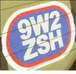

9 Feb 2024

Pi-star has included Calibration tool in the 20240208 update.
However, at the time this note was written, the connectivity was
not stable. It will intermittently connected or drop for no
particular reason.
4 Sep 2023
Going back to 1993, where I started to have an interest in amateur radio after watching one of my colleagues where I work at playing with his two-way radio. And that was when the Highland Tower at Bukit Antarabangsa collapse on 11 December 1993.
I got to see in real life how the amateur radio operator provides the communication support during the transport of the victim from the site to the hospital and my colleague was there. He was allowed to participate due to his capability in communication.
It was not until 2007, after I moved to other company, that I've decided to take the exam called RAE (Radio Amatuer Examination) so that I will also become one of the amateur radio operator. I was thinking this is only a hobby and didn't put much time on it. On the exam day, I met a couple of colleague and they asked me what type of rig (radio equipment) that I use and which simplex channel I normally hang out. I look baffled since I never use those jargon.
In the exam hall, I saw people comes equiped with pencil, eraser and calculator. I have no clue what do we need the calcultor for. I only have pencil and eraser with me. I make use of the full 3 hours of the provided time to answer 100 question. Going back and forth from page to page. Checking the translation page to ensure that I selected the right answer.

After getting the signature from two 9M2 holder, I submitted the callsign application form to get the official callsign for myself, 9W2ZSH. Coming back To the office, I stop by under the tree near the office by the LDP Highway to start the QSO (two-way communication between amateur radio operator)
I can't remember who is the other station that pick-up my call. It was the best moment for me being able to talk to another person using only a handy-talkie.